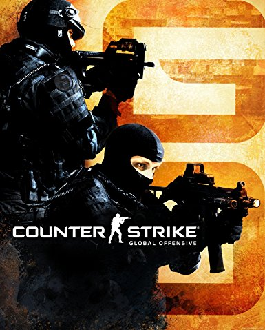

Counter Strike: Global Offensive er eit spill som er gitt ut av valve. Det ble lansert i 2012, og det er eit nettbasert spel. Det er to lag, og fem spillere på kvart lag. Du kan enten velge mellom å spille som terrorist, ellers kan du velge å spille som anti-terrorist.
Terroristene skal da prøve og eliminere alle anti-terroristene, eller plante bomba og må da beskytte bomba i 45 sekunder før den sprenger. Men om du spiller som anti-terrorist, så skal du prøve og eliminere alle terroristene eller desarmere bomben om den blir plantet.
Dette er logoen som flest kjenner til, når det kjem til Counter Strike: Global Offensive.
